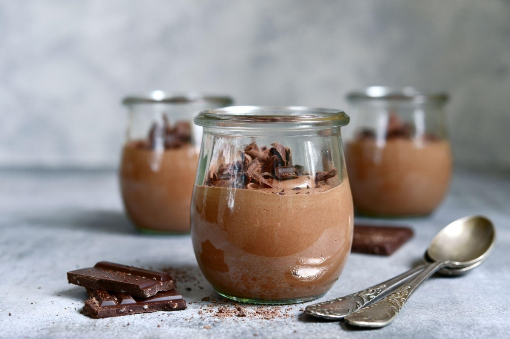

Składniki na 1 porcję
- 50 g gorzkiej czekolady
- 50 ml śmietanki 30%
- 1 jajko
- 1 łyżeczka cukru pudru
Przygotowanie
- Rozpuść czekoladę w kąpieli wodnej lub w mikrofalówce.
- Oddziel białko od żółtka. Ubij białko na sztywną pianę.
- Śmietankę ubij z cukrem pudrem na puszystą konsystencję.
- Do przestudzonej czekolady dodaj żółtko, wymieszaj.
- Delikatnie połącz masę czekoladową z bitą śmietaną, a następnie z ubitym białkiem.
- Przełóż mus do szklanki lub pucharka i schłodź w lodówce przez minimum 2 godziny.